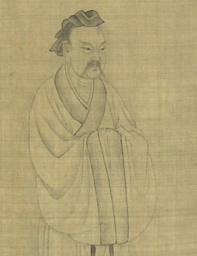

Did Sun Tzu
Say That?
Checked against The Art of War,
tr. Lionel Giles, 1910
Paste a quote that “Sun Tzu said”.
The scroll will judge it.

Checked against The Art of War,
tr. Lionel Giles, 1910
Paste a quote that “Sun Tzu said”.
The scroll will judge it.